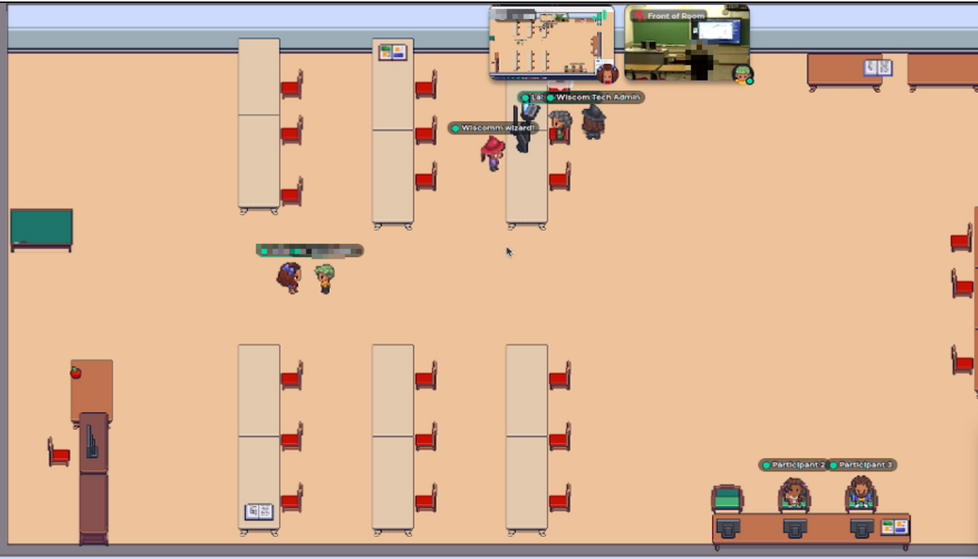

Research
I've worked on a variety of research projects. I am an active member of the PLeX Lab, and previously was a member of the KLAP Lab. Associated projects below.
PLeX Lab (Participatory Live Experiences Laboratory)
Ph.D Research (August 2024 - present)
I'm currently working on examining cooperative and collaborative factors in play.
The WisCom Project (December 2023 - present)
I am a research assistant creating a mixed reality environment to support collaborative learning environments, both in-person and remote.
YouTube Study (January 2023 - December 2023)
I worked on this study as a research assistant under Dr. Bill Hamilton. I helped explore the ways in which YouTube's algorithm recommends videos to better inform content creators.
KLAP Lab (Knowledge representation, Learning, and Advanced Programming Laboratory)
Epistemic Forward Planner (August 2023 - Febuary 2024)
I worked on this project as a volunteer researcher under Dr. Francesco Fabiano. I helped implement a portfolio search solution to a pre-existing epistemic forward planner.
Smart Grids Research (August 2019 - December 2022)
I worked on this project as a research assistant under Dr. Son Tran. I helped develop an AI system to schedule the usage of smart devices in a home based on observed preferences.